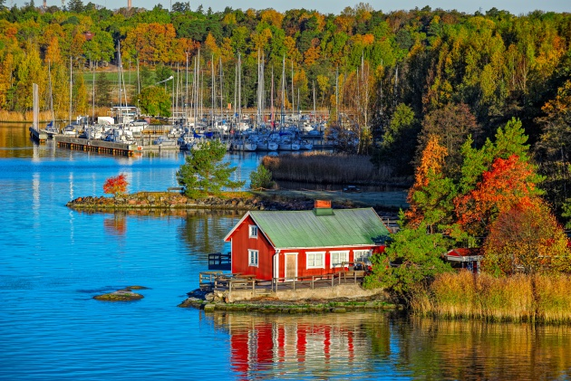

Finlandia, oficialmente la República de Finlandia, es uno de los veintisiete estados soberanos que forman la Unión Europea. Está situado en el noreste de Europa , un pais frio y lleno de sorpresas .
| |
 |
Finlandia es el séptimo país más extenso de Europa y cuenta con una densidad poblacional baja de 16 habitantes por km², lo que le convierte en el menos densamente poblado de la Unión Europea. La mayoría de los finlandeses hablan finésNota como su lengua materna, la cual es una de las pocas lenguas oficiales de la Unión Europea que no descienden de la familia indoeuropea. La segunda lengua oficial de Finlandia es el sueco